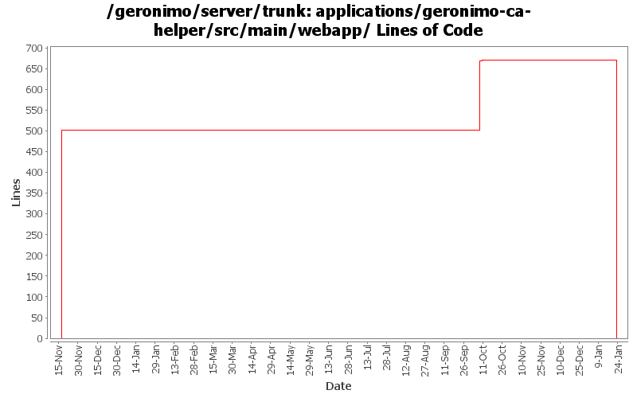

[root]/applications/geronimo-ca-helper/src/main/webapp
 WEB-INF
(0 files, 0 lines)
WEB-INF
(0 files, 0 lines)

| Author | Changes | Lines of Code | Lines per Change |
|---|---|---|---|
| Totals | 44 (100.0%) | 1186 (100.0%) | 26.9 |
| vamsic007 | 28 (63.6%) | 1179 (99.4%) | 42.1 |
| jdillon | 16 (36.4%) | 7 (0.6%) | 0.4 |
(GERONIMO-3747) Moved applications/* to plugins/*
0 lines of code changed in 9 files:
Allow submission of CSR text directly from CA Helper app.
3 lines of code changed in 2 files:
GERONIMO-3473 CA Helper app should support submitting Certificate Requests from Internet Explorer
o CA Helper App now supports generating certificate requests from Internet Explorer, installing CA and personal certificates.
193 lines of code changed in 5 files:
Std props
7 lines of code changed in 7 files:
modified svn properties
502 lines of code changed in 7 files:
GERONIMO-2537 All Geronimo source files must be brought in line with the new ASF source header and copyright notice policy
112 lines of code changed in 7 files:
GERONIMO-2413 Add a Certification Authority (CA) portlet to Geronimo console
369 lines of code changed in 7 files: